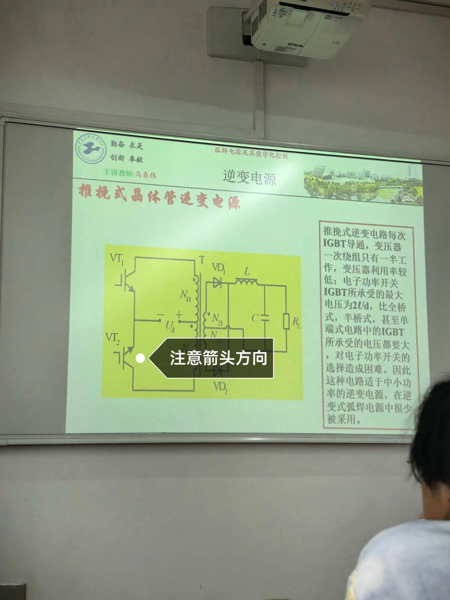

13 手写笔记/课堂实拍/kt-07 推挽式电路识图（老师标 注意箭头方向 ）
kt-07 推挽式电路识图（老师标 注意箭头方向 ）
📷 课堂实拍 · 老师标注为重点（原图见下；文字为转录，公式/接点以图为准）
推挽式电路识图（老师标"注意箭头方向"）

实拍转录
- 推挽式电路第三张实拍，老师标注「注意箭头方向」。
- 图上给出 VT₁、VT₂ 的导通方向箭头，Ud 的极性，一次 N₁₁/N₁₂、二次 N₂₁/N₂₂ 与 VD₁/VD₂ 全波整流、L、C、RL。
- 右侧仍是那段结论：一次只有一半绕组工作、利用率低；开关承受 2Ud；只适合中小功率、弧焊电源很少采用。
本页重点
- 箭头方向＝电流方向＝磁通方向；推挽两管交替，磁通正反交替。
- 看箭头就能判断哪半周哪只管子导通、二次哪只二极管导通。
考点（怎么考）
- 补考常见：给定导通管，标出 i₁/i₂ 与二次整流电流方向。
对应讲义页
关联
- 概念卡：双端逆变电路 · 逆变主电路
- 讲义：00 第6章 逆变式 导航 · 总览：课堂实拍总览
- 索引：01 弧焊电源 MOC · 课件标红总表